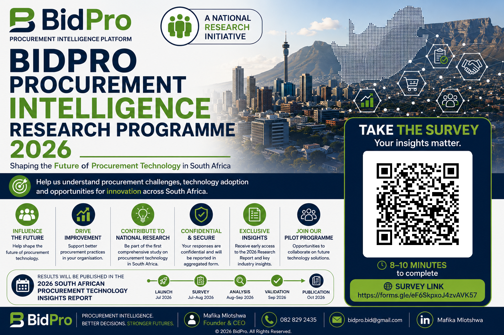

BidPro Platform
A cloud-based procurement intelligence platform currently in development.
BidPro combines research, digital innovation and practical technology to support better procurement decisions, stronger governance and improved organisational performance.
Contribute to the inaugural South African Procurement Technology Insights Report.
BidPro is a South African procurement technology initiative focused on helping organisations discover opportunities, manage compliance, coordinate bid preparation, monitor deadlines and make better procurement decisions.
Our public research programme ensures future technology is shaped by the experiences of organisations and procurement professionals across South Africa.
A cloud-based procurement intelligence platform currently in development.
Evidence-led research on procurement challenges, technology adoption and digital maturity.
Research prospectuses, executive briefs and future industry insight reports.
Help build a clearer national understanding of procurement practices, digital transformation and technology adoption. Your response will contribute to the 2026 South African Procurement Technology Insights Report.

Scan to participateConfidential · 8–10 minutes